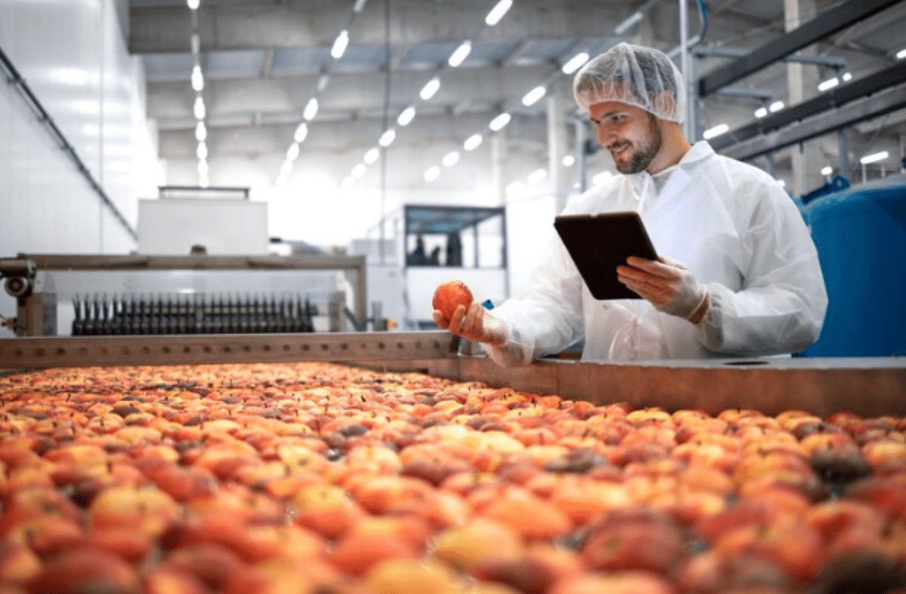
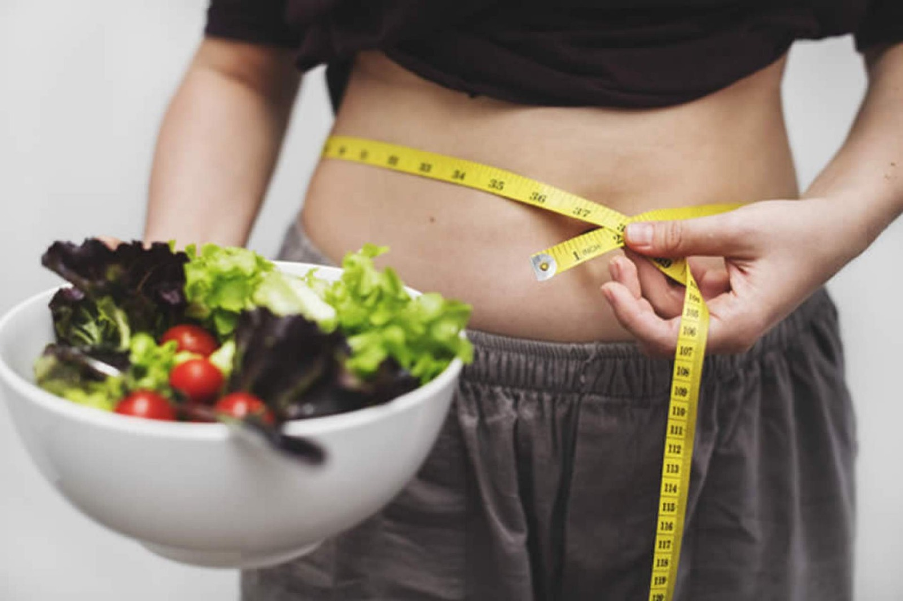
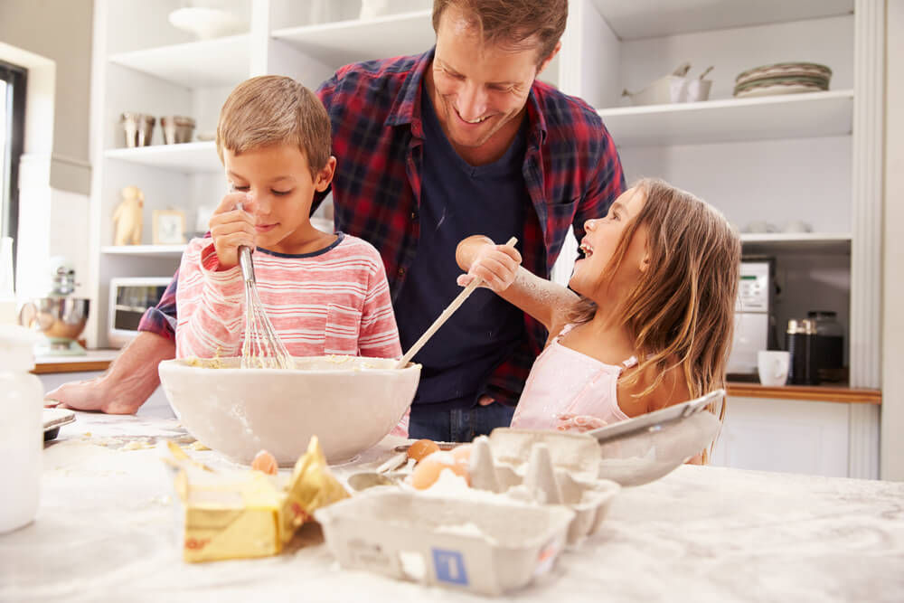

MENU
MENU
Modo Escuro
Página Inicial
Encontre Receitas
Buscar Receitas
Receitas Encontradas:
Escreva um ingrediente em inglês
Principais Notícias
Cozinha Molecular: A Ciência Por Trás da Alta Gastronomia

Políticas Alimentares Rigorosas e os Impactos na Indústria Culinária

A Controvérsia das Dietas de Exclusão no Mundo da Alimentação
As Principais Tendências Culinárias de 2024: Do Farm-to-Table ao Plant-Based

Cozinhar pode ser uma experiência divertida e recompensadora. Para quem está começando na cozinha, seguir algumas dicas simples pode fazer toda a diferença no sabor e na apresentação dos pratos.
As Novas Fronteiras da Alimentação: Tecnologia e Inovação na Cozinha de 2024